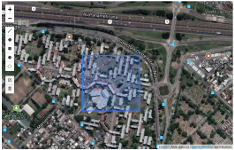
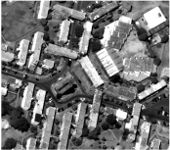
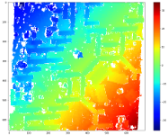

Automated 3D reconstruction from satellite images
SIAM IS18 Mini-tutorial - 08/06/2018
Gabriele Facciolo, Carlo de Franchis, and Enric Meinhardt-Llopis




Abstract
Commercial spaceborne imaging is experiencing an unprecedented growth both in size of the constellations and resolution of the images. This is driven by applications ranging from geographic mapping to measuring glacier evolution, or rescue assistance for natural disasters. For all these applications it is critical to automatically extract and update elevation data from arbitrary collections of multi-date satellite images. This multi-date satellite stereo problem is a challenging application of 3D computer vision: images are taken at very different dates, from very different points of view, and under different lighting conditions. The case of urban scenes adds further difficulties because of occlusions and reflections.
This tutorial is a hands-on introduction to the manipulation of optical satellite images, using complete examples with python code. The objective is to provide all the tools needed to process and exploit the images for 3D reconstruction. We will present the essential modeling elements needed for building a stereo pipeline for satellite images. This includes the specifics of satellite imaging such as pushbroom sensor modeling, coordinate systems, and localization functions. Then we will review the main concepts and algorithms for stereovision and tailor them to the case of satellite images. Finally, we will bring together these elements to build a 3D reconstruction pipeline for multi-date satellite images.
LIVE servers running the notebook
See also
- Open source Satellite Stereo Pipeline (S2P)
- Automatic 3D Reconstruction from Multi-Date Satellite Images (winning solution of the IARPA Multi-View Stereo 3D Mapping Challenge 2016)
- Master2 MVA course: Large-scale geospatial data exploitation
Run the notebook with a Docker image on http://localhost:8000
requires a good internet connection to access the satellite images
-
Download and launch the docker image with:
# Type ctrl-D to exit the container docker run --rm \ -p 8000:8000 \ -t -i facciolo/is18 \ jupyter notebook --port=8000 --ip=0.0.0.0 --NotebookApp.token='' -
Connect to: http://localhost:8000